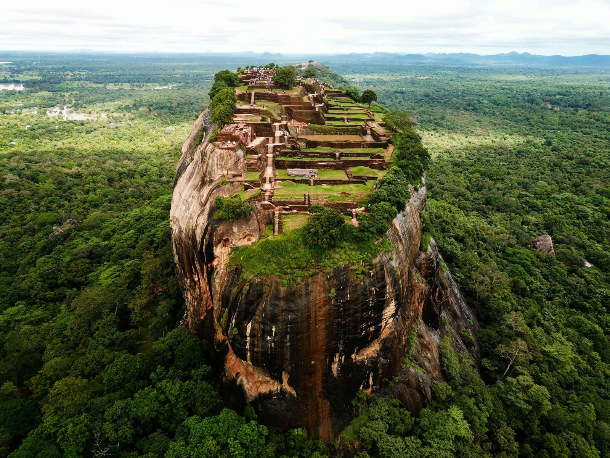
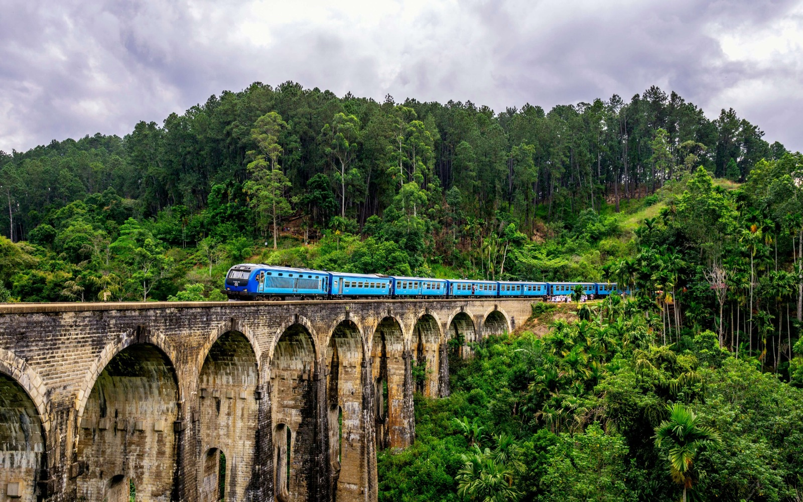

Sigiriya
Ancient rock fortress and UNESCO site.

Sigiriya is an ancient rock fortress in Sri Lanka and a UNESCO World Heritage Site. It is famous for its large rock, beautiful frescoes, and ancient palace ruins built by King Kashyapa. It is one of the most visited tourist attractions in Sri Lanka.
Ella
Beautiful mountains and train views.

Ella is a town in the central hills of Sri Lanka, known for its stunning mountain views, tea plantations, and the famous Nine Arch Bridge. It is a popular destination for trekking and nature lovers.
Galle
Historic Dutch colonial fort.

Galle is a city on the southwest coast of Sri Lanka, known for its historic Dutch colonial fort, which is a UNESCO World Heritage Site. The fort area is filled with charming streets, boutique shops, and cafes, making it a popular destination for history enthusiasts and travelers looking for a unique cultural experience.
Kandy
Beautiful mountain view

Kandy is a city in the central hills of Sri Lanka, known for its rich cultural heritage, vibrant markets, and the sacred Temple of the Tooth Relic. It is a popular destination for those interested in experiencing traditional Sri Lankan culture and spirituality.
Anuradhapura
Ancient city with sacred temples.

Anuradhapura is an ancient city in Sri Lanka, known for its well-preserved ruins of an ancient civilization. It is a UNESCO World Heritage Site and home to many sacred Buddhist temples, stupas, and monasteries. It is a significant pilgrimage site for Buddhists and a popular destination for history enthusiasts.
Trincomalee
Beautiful beaches and clear waters.

Trincomalee is a coastal city in the northeast of Sri Lanka, known for its beautiful beaches, clear waters, and historical sites. It is a popular destination for beach lovers, divers, and those interested in exploring the region's rich history and culture.
Jaffna
Rich Tamil culture and heritage.

Jaffna is a cultural city in Northern Sri Lanka famous for its Tamil heritage, historic fort, temples, and delicious local cuisine.